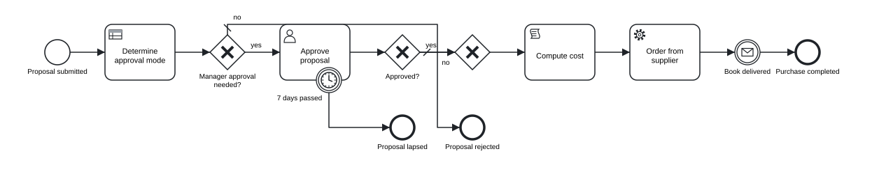
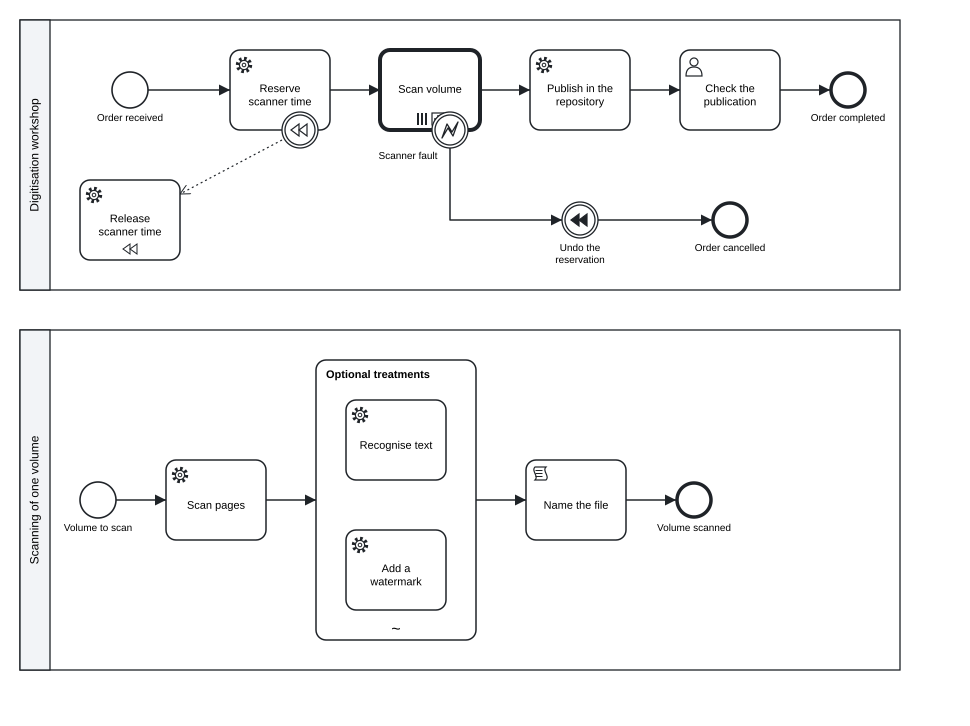

Chapter 10 Executable models on Camunda 8
In this chapter you will make a model executable with the header flag executable and see what the check adds for it · give service tasks their jobs and user tasks their forms, assignees and deadlines · write Camunda forms, variable mappings and FEEL expressions, and apply the = rule for attributes that take a value or an expression · correlate messages, run activities as multi-instance, ad-hoc and call activities, compensate, listen and version · recognise the elements Camunda 8 does not execute · export everything with tok export, deploy it to Camunda 8 Run and drive an instance through the REST API with curl and with a short Python script
The models of the previous chapters describe processes for people: they document a procedure, explain who does what and serve as a basis for analysis. A process engine needs more than that. It must know which form to show in a user task, which program performs an automatic step, which variable decides a gateway and which message continues a waiting instance. This chapter adds that layer. The engine in question is Camunda 8, the platform tok exports executable models for; its process engine is called Zeebe.
The executable layer is optional and stays apart from the rest of the language. A model without it is a complete BPMN model; a model with it is the same model plus the details that the engine reads. You can add the layer to any model when the time comes, and a tool that does not need it can ignore it.
10.1 The executable flag
A document becomes executable with the flag executable in the header:
tok 1.0 "Book purchase proposal" executable process=book-purchase version-tag="1.0"In a document with pools the flag can also stand on a pool (pool library "Library" executable), which makes only that pool’s process executable. The flag has three effects:
- The BPMN export marks the process with
isExecutable="true"and writes the Camunda extensions (elements in the namespacezeebe:) that the engine reads, together with the attributes that tell Camunda Modeler the file is a Camunda 8 model. tok checkapplies the executable profile: a set of rules with codes starting withCthat report what the engine would reject or could not run.- The attributes of the executable layer (assignees, job types, mappings and the others in this chapter) take effect. In a document without the flag they are kept in the text but ignored, and the check reports each of them with the warning
R055.
The header attribute target=camunda names the execution platform. It is the default, so you rarely write it. process= sets the identifier of the process in a document without pools, which is the identifier you use to start instances in the engine; a pool sets it with its own process=. Without it the identifier is process, which is a poor name for a process definition that lives next to others in one engine.
Here is what happens when the executable attributes are written into a document without the flag:
nonexec.tok:4: warning R055: 'assignee' belongs to the executable layer and is ignored because the document is not executable
nonexec.tok:4: warning R055: 'priority' belongs to the executable layer and is ignored because the document is not executable
nonexec.tok: 0 error(s), 2 warning(s), 0 note(s)The warning protects you from a common mistake: you add an assignee, export the model, and wonder why the engine does not assign the task. The teaching levels basic and analytic of tok check --level reject the executable layer altogether (Chapter 7).
10.2 The executable profile
In an executable document the check asks whether the engine has everything it needs. The most frequent findings are these:
| Code | Severity | Finding |
|---|---|---|
C011 |
note | a user task without form=: in Tasklist it can only be completed, without entering data |
C020 |
error | a service or send task without type=, the job type a worker program takes |
C022 |
error | a message throw or end event without type=; Camunda executes it as a job |
C030 |
error | a business rule task without decision= |
C040 |
error | a script task without expr= |
C052 |
error | a message catch event, message boundary event or receive task without correlation= |
C070 |
error | a flow leaving an xor or or gateway with several outgoing flows has neither when= nor default |
C090 |
error | a static due or follow-up date without a time zone |
C091 |
error | a priority outside 0–100 |
A small leave request, written quickly, shows four of them at once:
tok 1.0 "Leave request" executable
start s "Request submitted"
user review "Review the request"
rule rules "Apply the leave rules"
xor ok "Approved?"
catch answer "Answer from HR" message="HR answer"
end yes "Leave granted"
end no "Leave refused"
flow s -> review -> rules -> ok
flow ok -> answer "yes"
flow ok -> no "no" default
flow answer -> yesrequest.tok:4: note C011: user task 'review' has no form (form=)
request.tok:5: error C030: rule task 'rules' needs decision=ID
request.tok:7: error C052: 'answer' waits for a message and needs correlation="…"
request.tok:12: error C070: flow ok -> answer leaving gateway 'ok' needs when="…" or the default flag
request.tok: 3 error(s), 0 warning(s), 1 note(s)Each finding names the line and the attribute that is missing. The same document without executable checks clean: as a descriptive model it is correct, and only the engine needs the details.
10.3 A complete executable model
The model below is the purchase proposal of a university library, written for Camunda 8. A reader proposes a book in a start form. A decision table sets the approval mode. If the manager has to approve, a user task with a form goes to the acquisitions group, with a deadline; after seven days without a decision the proposal lapses. An approved or automatically accepted proposal gets its cost computed by a script, is ordered from the supplier by a worker program, and waits for the delivery message.
tok 1.0 "Book purchase proposal" executable process=book-purchase version-tag="1.0"
# an executable process for Camunda 8: a start form, a decision, a user task with a form
# and an assignment, a timer, a script, a job for a worker and a message with correlation
start proposed "Proposal submitted" form=f-proposal
rule mode "Determine approval mode" decision=approval-mode result=mode
xor needs "Manager approval needed?"
user approve "Approve proposal" form=f-approval candidate-groups="acquisitions" due="=now() + duration(\"P7D\")" priority=70
boundary expired "7 days passed" on=approve timer=P7D
xor agreed "Approved?"
xor merge
script cost "Compute cost" expr="price + 12.5" result=cost
service order "Order from supplier" type="order-book" retries=3 headers="channel: api; supplier: central" inputs="title = title; amount = cost" outputs="orderNumber = order.number"
catch delivered "Book delivered" message="Delivery" correlation="orderNumber"
end done "Purchase completed"
end rejected "Proposal rejected"
end lapsed "Proposal lapsed"
flow proposed -> mode -> needs
flow needs -> approve "yes" when="mode = \"manager\""
flow needs -> merge "no" default
flow approve -> agreed
flow agreed -> merge "yes" when="approved = true"
flow agreed -> rejected "no" default
flow expired -> lapsed
flow merge -> cost -> order -> delivered -> done
inputdata kind "Kind of publication" type=string
inputdata price "Estimated price" type=number
decision approval-mode "Approval mode" type=string requires="kind price" hit=first
| kind: string | price: number || mode: string || |
| "e-book" | - || "manager" || licences |
| "print" | <= 150 || "automatic" || cheap books |
| - | - || "manager" || everything else |
form f-proposal "Purchase proposal"
text "## Propose a book for the library"
field title "Title" required type=textfield
field author "Author" type=textfield
field kind "Kind of publication" required type=select options="print:printed book, e-book:e-book"
field price "Estimated price" required type=number min=0
field reason "Reason" type=textarea
form f-approval "Approval"
text "## Proposal: {{title}} ({{price}})"
field approved "Decision" required type=radio options="true:approve, false:reject"
field comment "Comment for the reader" type=textarea
Figure 10.1: The executable purchase proposal. The diagram is the same as for a descriptive model: the executable layer adds no shapes.
Download the model (.tok) Download the BPMN export (.bpmn)
The model has four layers in one file: the process, a decision model of DMN 1.5 (Chapter 9), two forms and the attributes the engine reads. What each attribute becomes in the BPMN file is summarised here:
| tok | Camunda 8 export |
|---|---|
start … form=f-proposal |
start form: zeebe:formDefinition formId="f-proposal" |
rule … decision=approval-mode result=mode |
zeebe:calledDecision decisionId="approval-mode" resultVariable="mode" |
user … form=f-approval |
zeebe:userTask, zeebe:formDefinition formId="f-approval" |
candidate-groups="acquisitions" |
zeebe:assignmentDefinition candidateGroups="acquisitions" |
due="=now() + duration(\"P7D\")" |
zeebe:taskSchedule dueDate="=now() + duration("P7D")" |
priority=70 |
zeebe:priorityDefinition priority="70" |
script … expr="price + 12.5" result=cost |
zeebe:script expression="=price + 12.5" resultVariable="cost" |
service … type="order-book" retries=3 |
zeebe:taskDefinition type="order-book" retries="3" |
headers="channel: api; supplier: central" |
zeebe:taskHeaders with two zeebe:header elements |
inputs=…, outputs=… |
zeebe:ioMapping with zeebe:input and zeebe:output |
catch … message="Delivery" correlation="orderNumber" |
the message Delivery with zeebe:subscription correlationKey="=orderNumber" |
flow … when="mode = \"manager\"" |
conditionExpression with the body =mode = "manager" |
version-tag="1.0" |
zeebe:versionTag value="1.0" |
The rest of the chapter explains these attributes one group at a time.
10.4 Static values and expressions: the = rule
Camunda evaluates expressions in FEEL, the expression language of DMN. In the BPMN file every expression starts with =, which is how Camunda tells an expression from a plain value. tok distinguishes two kinds of attributes, so that you write the = only where it carries meaning:
| Kind | Attributes | How you write the value |
|---|---|---|
| always an expression | when, expr, condition, correlation, collection, output-item, until, active, the right-hand sides in inputs and outputs |
FEEL without =: when="approved = true"; the exporter adds the = |
| a static value or an expression | assignee, candidate-users, candidate-groups, due, follow-up, priority, process, type, timer, business-id, version |
a static value as it is (assignee="manager"); a value computed at run time starts with = (assignee="=request.supervisor") |
The second kind follows the convention of Camunda Modeler, where the same fields accept both. A useful way to remember the rule: if the attribute could only ever be an expression, the = would add nothing, so tok leaves it out; if the attribute can be a constant, the = says that this time it is not. A document that is not executable never contains = at the start of a value.
The model above uses both kinds. due="=now() + duration(\"P7D\")" computes the due date when the task is created. A static date would be written without = and, as Camunda requires, with a time zone: due="2027-01-15T12:00:00+01:00". Leave the zone out, or give a priority Camunda does not accept, and the check says so:
dates.tok:4: error C090: due="2027-01-15T12:00" must be an ISO 8601 date-time with a zone (e.g. 2027-01-15T12:00:00+01:00) or an expression starting with =
dates.tok:4: error C091: priority must be an integer from 0 to 100 or an expression starting with =, not '120'
dates.tok: 2 error(s), 0 warning(s), 0 note(s)Quotation marks inside a value are escaped with a backslash, as in any tok string: when="mode = \"manager\"" is the FEEL condition mode = "manager".
10.5 FEEL in executable models
FEEL appears in conditions of flows, script expressions, correlation keys, mappings, multi-instance collections and completion conditions, ad-hoc collections, timers and assignments given as expressions, and in every decision. The version of FEEL tok checks depends on the header. In a document of language 0.7 or 1.0 every expression is FEEL at DMN conformance level 3: dates and durations, lists and contexts, for, some and every, filters and the standard functions. Camunda 8 evaluates the same FEEL with its own engine. Conformance case 63 runs the script sum(for d in dni return d * 0.5) on Camunda 8 Run as part of its executable test.
Two differences between Camunda’s FEEL and standard FEEL matter in practice, and tok handles the first of them for you:
- Names with spaces. DMN allows names such as
Outstanding fees; Camunda’s FEEL reads such a name only in backticks. When a document is executable for Camunda,tok exportwrites every FEEL name in its DMN files that is not a plain name (a letter or_, then letters, digits and_) in backticks, and a key of a context literal with such characters as a string. Documents that are not executable are exported in standard FEEL. - Numbers as text. tok writes a number without trailing zeros (
string(4 * 0.5)is"2"); Camunda keeps the scale of the decimal it computed ("2.0"). The numbers themselves compare equal.
Before you deploy a decision, test it with tok eval. For the approval mode of the purchase proposal:
tok eval 10-book-purchase.tok approval-mode kind=print price=120
"automatic"
tok eval 10-book-purchase.tok approval-mode kind=e-book price=30
"manager"
tok eval 10-book-purchase.tok approval-mode kind=print price=200
"manager"10.6 Service tasks and jobs
A service task in Camunda 8 is a job: the engine creates it and waits until a separate program, a job worker, activates it, does the work and reports completion or failure. The worker finds its jobs by their type. In tok:
service order "Order from supplier" type="order-book" retries=3 headers="channel: api; supplier: central"| Attribute | Meaning |
|---|---|
type="…" |
the job type; static, or an expression starting with = |
retries=N |
how many times a failed job is offered again before Camunda raises an incident |
headers="key: value; …" |
custom headers: static configuration the worker reads with the job, such as a template name or a channel |
Job types are names you agree on with the people who write the workers. A worker written in any language subscribes to order-book jobs, reads the job’s variables and headers, and completes the job with new variables. Without a running worker the instance waits at the task, which is correct behaviour, not an error.
The same attributes apply to send tasks and to message throw and end events. Camunda executes a message throw or end event as a job too, so in an executable document such an event needs type=:
throw notify "Notify the reader" message="Notice"notice.tok:4: error C022: message throw event 'notify' needs type="…" (Camunda executes it as a job)
notice.tok: 1 error(s), 0 warning(s), 0 note(s)If you do not have workers yet, model the automatic steps as script tasks (script … expr="…" result=…), which the engine evaluates itself, or as business rule tasks. The models used for teaching often do exactly that.
10.7 User tasks
A user task is work for a person in a task list. In an executable document tok exports every user task as a Camunda user task (zeebe:userTask), and the attributes below describe who should do it, by when and how urgently:
| Attribute | Camunda 8 | Example |
|---|---|---|
form=ID |
the form shown in the task (zeebe:formDefinition) |
form=f-approval |
assignee="…" |
the assignee | assignee="librarian", assignee="=request.supervisor" |
candidate-users="…" |
users who may claim the task, separated by commas when static | candidate-users="ola, jan" |
candidate-groups="…" |
groups who may claim the task | candidate-groups="acquisitions, management" |
due="…" |
the due date: ISO 8601 with a zone, or an expression | due="=now() + duration(\"P3D\")" |
follow-up="…" |
the follow-up date, the same way | follow-up="2027-01-20T09:00:00Z" |
priority=N |
the priority, 0 to 100, or an expression | priority=70 |
The assignment, schedule and priority become zeebe:assignmentDefinition, zeebe:taskSchedule and zeebe:priorityDefinition. In the conformance run on Camunda 8 Run, the case user-task checks that the created task carries its assignee, priority, due date, follow-up date and candidate groups, and case 63 checks the assignee and priority of a task in a language 1.0 document.
A start event can have a form too (start … form=F): in Tasklist it is the form with which a person starts the process.
10.8 Camunda forms
Forms are written in the same file as the process, as form blocks:
form f-approval "Approval"
text "## Proposal: {{title}} ({{price}})"
field approved "Decision" required type=radio options="true:approve, false:reject"
field comment "Comment for the reader" type=textarea| Line | Meaning |
|---|---|
form ID "Title" |
a form; it is exported as the Camunda form file ID.form, and its identifier is the formId a task refers to |
text "…" |
a text block in Markdown; \n is a line break and {{name}} inserts the value of a process variable |
field KEY "Label" type=… [required] [options="…"] [min=…] [max=…] |
an input field |
The field types are textfield, textarea, number, checkbox, select, radio and datetime. For select and radio, options lists value:Label pairs separated by commas; the values true and false become booleans and numbers become numbers, so options="true:approve, false:reject" sets the variable approved to a boolean, which the condition approved = true can test. default= gives a field its initial value.
The most important rule of forms is about names: the key of a field becomes a process variable. The field kind of the start form feeds the input kind of the decision table; the field approved of the approval form feeds the condition on the gateway agreed. If the names differ, the decision receives an empty value and the condition never holds. Reading the model as text makes such mismatches easy to find: search for the name and you see every place it is used.
A form exports to JSON in the format Camunda Modeler writes. The components of the approval form above are:
"components": [
{
"type": "text",
"id": "Text_1",
"text": "## Proposal: {{title}} ({{price}})"
},
{
"type": "radio",
"id": "Field_approved",
"key": "approved",
"label": "Decision",
"values": [
{
"label": "approve",
"value": true
},
{
"label": "reject",
"value": false
}
],
"validate": {
"required": true
}
},
{
"type": "textarea",
"id": "Field_comment",
"key": "comment",
"label": "Comment for the reader"
}
],10.9 Variable mappings
A process instance has variables. An activity often needs them under other names, or only a part of a larger structure, and its results should land in the process under names of the process. Variable mappings do this:
service order "Order from supplier" type="order-book" inputs="title = title; amount = cost" outputs="orderNumber = order.number"inputs and outputs are lists of target = expression pairs separated by semicolons. The target is a variable or a nested property (sender.iban); the expression is FEEL without =. Input mappings create local variables of the activity before it starts: the worker of order-book sees amount, computed from cost. Output mappings copy results into the process when the activity completes: the worker returns a structure order, and the process keeps only order.number as orderNumber. The pairs export to zeebe:ioMapping.
Mappings are allowed on activities, sub-processes and call activities; outputs also on catch, boundary and start events. On an error boundary event they are the only way to receive data from the error. Camunda passes to the catching event the variables sent together with the error, and outputs="reason = reason" merges them into the process. The code and message of the error are not available as variables. A pair that is not of the form target = expression is the error R053.
10.10 Messages and correlation
A process instance that waits for a message must know which message is meant for it. Camunda does this by correlation: a message carries a name and a correlation key, and it is delivered to the instance that waits for a message of that name with the same key. In tok the waiting event names the message and gives the key as an expression:
catch delivered "Book delivered" message="Delivery" correlation="orderNumber"When the instance reaches the event, Camunda evaluates orderNumber (here PO-17, set by the output mapping of the job) and opens a subscription for messages named Delivery with the key PO-17. The export declares the message once, with zeebe:subscription correlationKey="=orderNumber". correlation= belongs to message catch events, message boundary events and receive tasks; without it the check reports C052. A message start event needs no key, because it starts a new instance rather than continuing one.
The correlation keys of BPMN 2.0.2 (key blocks with prop lines, Chapter 4) are a different construct for describing collaborations. Camunda ignores them and correlates by correlation=; in an executable document the check reports a key with the warning C110.
Messages reach Camunda from outside: from a worker, from another system or, for testing, from the REST API, as the last part of this chapter shows.
10.11 Multi-instance, ad-hoc sub-processes and call activities
The second example is a digitisation workshop. An order lists several volumes; each volume is scanned by a separate process, called once per volume, all in parallel. Before scanning, scanner time is reserved; if scanning fails, the reservation is undone by compensation. The result is published in a repository through a REST call, and a person checks it.
tok 1.0 "Digitisation order" executable
# multi-instance call activity, ad-hoc sub-process, compensation, an error boundary event,
# the REST connector, listeners and a user task with an expression as its assignee
pool library "Digitisation workshop" process=digitisation version-tag="2.1"
start received "Order received"
service reserve "Reserve scanner time" type="reserve-scanner" compensate=release
service release "Release scanner time" compensation type="release-scanner"
call scan "Scan volume" parallel process=scan-volume binding=deployment child-vars=none collection="volumes" item=volume output=files output-item="file" inputs="volume = volume" outputs="file = file"
boundary failed "Scanner fault" on=scan error="Scanner fault" code="SCAN-FAULT" outputs="reason = reason"
throw undo "Undo the reservation" compensate activity=reserve
end cancelled "Order cancelled"
service publish "Publish in the repository" result=publication connector=rest method=POST url="https://repository.example.org/api/items" body="={title: title, files: files}"
user check "Check the publication" form=f-check assignee="=requester" priority=50 listeners="creating: notify-requester"
end done "Order completed"
pool volume "Scanning of one volume" process=scan-volume
start vol "Volume to scan"
service pages "Scan pages" type="scan-pages" retries=2 headers="resolution: 600"
adhoc extras "Optional treatments" wait active="treatments"
service ocr "Recognise text" type="ocr"
service mark "Add a watermark" type="watermark"
script name "Name the file" expr="\"vol-\" + string(volume)" result=file
end scanned "Volume scanned"
flow received -> reserve -> scan -> publish -> check -> done
flow failed -> undo -> cancelled
flow vol -> pages -> extras -> name -> scanned
form f-check "Check the publication"
text "## {{title}}\nPublished as {{publication.body.id}}"
field ok "Publication is correct" type=checkbox
Figure 10.2: The digitisation order: a multi-instance call activity, compensation, an error boundary event, the REST connector and an ad-hoc sub-process in the called process.
Download the model (.tok) Download the BPMN export (.bpmn)
10.11.1 Multi-instance
The flag parallel or sequential makes an activity multi-instance; in an executable document the attributes below say what it iterates over:
| tok | Camunda 8 | In the example |
|---|---|---|
parallel / sequential |
multiInstanceLoopCharacteristics isSequential |
parallel: all volumes at once |
collection="expr" |
inputCollection |
volumes, a list from the order |
item=name |
inputElement, the variable of one instance |
volume |
output=name, output-item="expr" |
outputCollection, outputElement |
the list files collects the file of every instance |
until="expr" |
completionCondition |
not used here |
output and output-item come together or not at all, and collection requires parallel or sequential; otherwise the check reports R054. A completion condition ends the activity early, for example after two of three reviews: until="numberOfCompletedInstances >= 2". The conformance run on Camunda 8 Run covers both forms: a parallel script that doubles every element of a list into wyniki (results), and a parallel user task that completes after two of three instances.
10.11.2 Ad-hoc sub-processes
An ad-hoc sub-process holds activities that may run in any order, as often as needed, without sequence flows from a start event. In an executable document three attributes control it:
| tok | Camunda 8 |
|---|---|
active="expr" |
zeebe:adHoc activeElementsCollection: a list of the identifiers of the inner elements to activate |
until="expr" |
completionCondition |
wait |
cancelRemainingInstances="false": when the condition holds, running elements are allowed to finish (by default they are cancelled) |
In the example the variable treatments lists what a volume needs, for instance ["ocr"] or ["ocr", "mark"], and only those treatments run.
10.11.3 Call activities
A call activity starts another process and waits for it:
| tok | Camunda 8 |
|---|---|
process=ID (or ="expr") |
zeebe:calledElement processId |
binding=latest\|deployment\|version-tag |
bindingType: the latest version, the version deployed together with the caller, or the version with a tag |
version="tag" |
versionTag, for binding=version-tag |
child-vars=all\|none |
propagateAllChildVariables: whether all variables of the called process come back (default all) |
parent-vars=all\|none |
propagateAllParentVariables: whether the called process sees all variables of the caller (default all) |
business-id="…" |
businessId of the called instance |
The example calls scan-volume with binding=deployment, so each order uses the scanning process deployed with it, and child-vars=none, so only the mapped file comes back. Both processes are in one document, as two pools, and tok export writes one BPMN file with both; deploying that file deploys both processes. binding= and version= are also accepted on business rule tasks, to bind the called decision, and on elements with form=, to bind the form.
10.12 Compensation, errors and listeners
Compensation undoes work that has already completed. compensate=release on the reservation attaches a compensation boundary event to it, associated with the handler release; the handler carries the flag compensation and has no sequence flows (R051 otherwise). A throw or end event with the flag compensate triggers compensation, of every completed activity or, with activity=ID, of one of them. In the example an error during scanning leads to undo, which compensates the reservation, so the worker of release-scanner frees the scanner time. The conformance case compensation runs exactly this on Camunda 8 Run: the reservation job completes, the throw event triggers compensation, and the release job runs.
Errors are thrown by workers: a worker that cannot do its job reports a BPMN error with a code instead of completing the job. An error boundary event with error="Name" code="CODE" catches errors with that code; the flag error without a name catches every error. An error end event with error="Name" throws one. Escalations work the same way with escalation=.
Conditional events wait until a condition over the variables holds: catch ready "Data complete" condition="complete = true" events="create, update". events= limits the variable events that make Camunda evaluate the condition (zeebe:conditionalFilter variableEvents); it is allowed on intermediate, boundary and event sub-process start events but not on start events of a process (R052).
Listeners run a job when something happens to an element: listeners="start: job-type; end: job-type" defines execution listeners on any element. On user tasks the events creating, assigning, updating, completing and canceling define task listeners, such as notify-requester in the example, which a worker can use to send an e-mail when the task is created. An entry may give its retries in parentheses: start: before-calculation (5).
10.14 The REST connector
Camunda’s connectors are ready-made job workers that come with the platform. The REST outbound connector calls an HTTP endpoint. tok expands it from a few attributes:
service publish "Publish in the repository" result=publication connector=rest method=POST url="https://repository.example.org/api/items" body="={title: title, files: files}"| Attribute | Meaning |
|---|---|
connector=rest |
the REST outbound connector |
method= |
the HTTP method: GET, POST, … |
url= |
the address, static or an expression |
result= |
the variable that receives the response |
body=, query=, headers-in= |
optional request body, query parameters and request headers, usually as FEEL contexts starting with = |
The export writes the job type of the connector (io.camunda:http-json:1), its input mappings (the method, the URL, the body and an authentication of type noAuth) and the header resultVariable. Other connectors are used through their job types, input mappings and headers with type=, inputs= and headers=. The conformance case connector calls the topology endpoint of the local engine and checks that the response arrives in the result variable.
10.15 Elements Camunda 8 does not execute
BPMN 2.0.2 contains elements that Camunda Modeler can draw but the engine does not execute. tok knows them all: in an executable document for Camunda every such element is reported with a code that names it. A descriptive or analytic model may use them freely.
| Code | Severity | Element |
|---|---|---|
C100, C101 |
error | transaction; cancel end or boundary event |
C102 |
error | complex gateway |
C103 |
error | standard loop with while=, test-before or loop-max= (use multi-instance) |
C104, C105 |
error | multiple and parallel multiple events (several triggers) |
C106, C107 |
error | instantiating receive task (use a message start event); instantiating event-based gateway |
C108 |
error | call activity of a global task (task=) |
C109, C110 |
warning | operation= and correlation keys: ignored, because workers take jobs by type= and messages are correlated by correlation= |
C120, C121, C123 |
warning | conversations, call conversations, participant multiplicity of a pool: ignored |
C122 |
error | choreography |
C130–C132 |
error | a business knowledge model whose logic is an invocation; a function definition whose body is not a literal expression; a decision without logic |
The model below books a room and a ticket inside a transaction. It is a correct BPMN model, and it is not a model Camunda 8 can run:
tok 1.0 "Room and ticket booking" executable
# elements of BPMN 2.0.2 that Camunda 8 does not execute, and a service task without a job type
start s "Trip requested"
transaction booking "Book room and ticket"
start bs
service room "Book the room" type="book-room" compensate=free-room
service free-room "Free the room" compensation type="free-room"
end booked
end abort "Booking aborted" cancel
xor ok "Both booked?"
boundary cancelled "Booking cancelled" cancel on=booking
complex enough "Enough offers?" activation="_activationCount >= 2"
service notify "Notify the traveller"
end e "Trip booked"
end e2 "Trip cancelled"
flow bs -> room -> ok
flow ok -> booked "yes" when="ok = true"
flow ok -> abort "no" default
flow s -> booking -> enough -> notify -> e
flow cancelled -> e210-not-executed-error.tok:5: error C100: transaction 'booking' is not executed by Camunda 8.10
10-not-executed-error.tok:10: error C101: cancel event 'abort' is not executed by Camunda 8.10
10-not-executed-error.tok:12: error C101: cancel event 'cancelled' is not executed by Camunda 8.10
10-not-executed-error.tok:13: error C102: complex gateway 'enough' is not executed by Camunda 8.10
10-not-executed-error.tok:14: error C020: service task 'notify' needs type="…" (job type for a worker)
10-not-executed-error.tok: 5 error(s), 0 warning(s), 0 note(s)Remove the flag executable and only the reasoning of the model remains; the same text then checks without errors. To run the booking on Camunda you would replace the transaction by an embedded sub-process with compensation handlers and an error end event, and the complex gateway by an inclusive or parallel join. The appendix on conformance lists the codes with their conformance cases.
10.16 Exporting with tok export
tok bpmn writes only the BPMN file. An executable model also needs its decisions and forms, so for Camunda use tok export, which writes everything into a folder:
tok export 10-book-purchase.tok -o out
out\10-book-purchase.bpmn
out\10-book-purchase.svg
out\approval-mode.dmn
out\approval-mode.drd.svg
out\f-proposal.form
out\f-approval.formThe command prints the files it writes (with the path separator of the system):
| File | Content | Deployed? |
|---|---|---|
NAME.bpmn |
the process with the Camunda extensions and a diagram layout | yes |
NAME.svg |
the picture of the diagram | no |
GRAPH.dmn |
the decision model: in a document of language 0.7 or 1.0 one DMN 1.5 file per connected decision requirements graph, named after its first decision, with a DMNDI diagram | yes |
GRAPH.drd.svg |
the picture of the decision requirements graph | no |
ID.form |
one Camunda form per form block |
yes |
The BPMN file opens in Camunda Modeler as a Camunda 8 diagram, with every property in its panel, so you can inspect what tok wrote or deploy it from there. When a layout sidecar FILE.tok.layout lies next to the model (Chapter 8), tok export keeps its drawing, as tok bpmn does.
10.17 Deploying and running on Camunda 8 Run
Camunda 8 Run is the distribution of Camunda 8 for one computer: the engine, the web applications Operate (instances, variables and incidents on the diagram) and Tasklist (user tasks and forms), and the connectors, started together. Camunda provides it for local development and learning, not for running real cases. You download it from the Camunda website, unpack it and start it with ./c8run start on Linux and macOS or .\c8run.exe start on Windows; ./c8run stop or .\c8run.exe stop stops it. The applications are then available at http://localhost:8080 (user demo, password demo), and the Orchestration Cluster REST API at http://localhost:8080/v2.
You can deploy the exported files from Camunda Modeler and start instances in Tasklist, as you would with any model drawn by hand. This section uses the REST API instead, because it can be scripted and shows exactly what happens. The examples use curl in a POSIX shell (Linux, macOS, Git Bash on Windows). In Windows PowerShell type curl.exe instead of curl, because curl there is an alias of another command, and write the JSON bodies into files (-d @body.json) to avoid quoting problems.
10.17.1 Deploy
One request deploys every file that tok export wrote, except the pictures. Deploy the process, the decision and the forms together, so that the process finds them:
curl -X POST http://localhost:8080/v2/deployments \
-F resources=@out/10-book-purchase.bpmn \
-F resources=@out/approval-mode.dmn \
-F resources=@out/f-proposal.form \
-F resources=@out/f-approval.formThe response lists the deployed process definition book-purchase, the decision approval-mode and the two forms, each with its key and version. Deploying a changed model again creates a new version; instances already running continue under the version they started with.
10.17.2 Start an instance
An instance is started by the identifier of its process definition, with the variables the start form would give:
curl -X POST http://localhost:8080/v2/process-instances \
-H "Content-Type: application/json" \
-d '{"processDefinitionId": "book-purchase",
"variables": {"title": "Process Mining", "kind": "e-book", "price": 60}}'The response contains the processInstanceKey, which identifies the instance in every later request. The engine immediately evaluates the decision (an e-book needs the manager) and creates the user task.
10.17.3 Complete a user task
The searches of the API find the user tasks of the instance. Searches are eventually consistent: a task created a moment ago can take a second or two to appear, so repeat the search if the list is empty.
curl -X POST http://localhost:8080/v2/user-tasks/search \
-H "Content-Type: application/json" \
-d '{"filter": {"processInstanceKey": "2251799813685249", "state": "CREATED"}}'Each item has a userTaskKey and the properties tok exported: candidateGroups, dueDate, priority. Completing the task with variables is what the form does when the manager submits it:
curl -X POST http://localhost:8080/v2/user-tasks/2251799813685262/completion \
-H "Content-Type: application/json" \
-d '{"variables": {"approved": true}}'(The keys in these commands only show their form; take the keys from the responses you receive. The API returns keys as strings of digits, and the filters accept them in the same form.)
10.17.4 Work on a job
The script computes the cost, and the instance reaches the job of type order-book. A worker activates jobs of its type, does the work and completes them. With the API you can play the worker by hand:
curl -X POST http://localhost:8080/v2/jobs/activation \
-H "Content-Type: application/json" \
-d '{"type": "order-book", "timeout": 60000, "maxJobsToActivate": 1, "worker": "by-hand"}'The response holds a list jobs. Each job has a jobKey, its variables (with amount from the input mapping), its customHeaders (channel and supplier) and its retries (3). Complete it with the result the supplier’s system would give:
curl -X POST http://localhost:8080/v2/jobs/2251799813685281/completion \
-H "Content-Type: application/json" \
-d '{"variables": {"order": {"number": "PO-17"}}}'A worker that fails reports a BPMN error instead (POST /v2/jobs/KEY/error with errorCode, errorMessage and optionally variables), which an error boundary event with that code catches.
10.17.5 Publish a message
The output mapping has set orderNumber to PO-17, and the instance waits at the event delivered. The delivery message is published with its name and correlation key:
curl -X POST http://localhost:8080/v2/messages/publication \
-H "Content-Type: application/json" \
-d '{"name": "Delivery", "correlationKey": "PO-17", "timeToLive": 60000}'The time to live (in milliseconds) keeps the message for a minute, so it is still delivered if the instance reaches the event a moment after it was published.
10.17.6 Follow the instance
The instance has now reached the end event done. Three searches show its state, the path it took and its variables:
curl -X POST http://localhost:8080/v2/process-instances/search \
-H "Content-Type: application/json" \
-d '{"filter": {"processInstanceKey": "2251799813685249"}}'
curl -X POST http://localhost:8080/v2/element-instances/search \
-H "Content-Type: application/json" \
-d '{"filter": {"processInstanceKey": "2251799813685249"}}'
curl -X POST http://localhost:8080/v2/variables/search \
-H "Content-Type: application/json" \
-d '{"filter": {"processInstanceKey": "2251799813685249"}, "page": {"limit": 1000}}'The instance has the state COMPLETED; the element instances list every element it passed, each with its elementId (the tok identifier) and its state; the variables are returned as JSON text in value. Operate shows the same instance on the diagram. Variables of an instance can also be set from outside with PUT /v2/element-instances/KEY/variables, which is how the conformance case conditional makes its conditional event fire.
10.17.7 Evaluate a decision
A deployed decision can be evaluated on its own, without a process:
curl -X POST http://localhost:8080/v2/decision-definitions/evaluation \
-H "Content-Type: application/json" \
-d '{"decisionDefinitionId": "approval-mode", "variables": {"kind": "print", "price": 120}}'The field output of the response holds the value of the decision as JSON text, here "automatic", the value tok eval gave earlier. Comparing the two is a quick test that the decision means in Camunda what it means in tok.
10.17.8 The same run in Python
The script below performs the whole run: it exports the model, deploys it, starts an instance, completes the user task, plays the worker, publishes the message, checks the end event and the variables, and compares one evaluation of the decision with tok eval. It uses only the Python standard library and the tok command. Its functions are those of the runner that tests tok against Camunda 8 Run 8.10 for the conformance tables.
"""Deploy the book purchase model to Camunda 8 Run and drive one instance to its end.
Run it in the folder of 10-book-purchase.tok, with Camunda 8 Run started and tok on the PATH."""
import glob
import json
import os
import subprocess
import tempfile
import time
import urllib.error
import urllib.request
import uuid
API = os.environ.get("CAMUNDA_API", "http://localhost:8080/v2")
def call(method, path, body=None, files=None):
"""One request to the REST API: JSON in and out, or a multipart upload of files."""
url = API + path
if files is not None:
boundary = uuid.uuid4().hex
parts = []
for name in files:
with open(name, "rb") as f:
data = f.read()
parts.append(("--%s\r\nContent-Disposition: form-data; name=\"resources\"; filename=\"%s\"\r\n"
"Content-Type: application/octet-stream\r\n\r\n" % (boundary, os.path.basename(name))
).encode("utf-8") + data + b"\r\n")
payload = b"".join(parts) + ("--%s--\r\n" % boundary).encode("utf-8")
req = urllib.request.Request(url, data=payload, method=method,
headers={"Content-Type": "multipart/form-data; boundary=" + boundary})
else:
data = json.dumps(body).encode("utf-8") if body is not None else None
req = urllib.request.Request(url, data=data, method=method, headers={"Content-Type": "application/json"})
try:
with urllib.request.urlopen(req, timeout=60) as r:
text = r.read().decode("utf-8")
return json.loads(text) if text.strip() else {}
except urllib.error.HTTPError as ex:
raise RuntimeError("%s %s -> %s %s" % (method, path, ex.code, ex.read().decode("utf-8", "replace")[:400]))
def poll(fn, what, timeout=60):
"""Repeat fn() every second until it returns something: the searches are eventually consistent."""
t0 = time.time()
while True:
res = fn()
if res:
return res
if time.time() - t0 > timeout:
raise RuntimeError("timeout waiting for " + what)
time.sleep(1)
def activate(job_type):
def get():
res = call("POST", "/jobs/activation", {"type": job_type, "timeout": 60000, "maxJobsToActivate": 1,
"worker": "book-purchase-demo", "requestTimeout": 2000})
return res.get("jobs") or None
return poll(get, "job of type %s" % job_type)[0]
def user_tasks(pik):
res = call("POST", "/user-tasks/search", {"filter": {"processInstanceKey": pik, "state": "CREATED"}})
return res.get("items") or None
def completed(pik):
res = call("POST", "/element-instances/search", {"filter": {"processInstanceKey": pik}})
return [i["elementId"] for i in res.get("items", []) if i.get("state") == "COMPLETED"]
def variables(pik):
res = call("POST", "/variables/search", {"filter": {"processInstanceKey": pik}, "page": {"limit": 1000}})
out = {}
for v in res.get("items", []):
if str(v.get("scopeKey")) == str(pik):
try:
out[v["name"]] = json.loads(v["value"])
except (ValueError, TypeError):
out[v["name"]] = v["value"]
return out
# 1. export the model and deploy the process, the decision and the forms together
folder = tempfile.mkdtemp(prefix="tok-camunda-")
subprocess.run(["tok", "export", "10-book-purchase.tok", "-o", folder], check=True)
files = sorted(p for ext in ("bpmn", "dmn", "form") for p in glob.glob(os.path.join(folder, "*." + ext)))
call("POST", "/deployments", files=files)
# 2. start an instance with the variables the start form would give
inst = call("POST", "/process-instances", {"processDefinitionId": "book-purchase",
"variables": {"title": "Process Mining", "kind": "e-book",
"price": 60}})
pik = inst["processInstanceKey"]
# 3. an e-book needs the manager: complete the approval as the form would
task = poll(lambda: user_tasks(pik), "user task")[0]
print("user task priority:", task.get("priority"))
call("POST", "/user-tasks/%s/completion" % task["userTaskKey"], {"variables": {"approved": True}})
# 4. act as the worker of the job type order-book
job = activate("order-book")
print("job headers:", job.get("customHeaders"), "retries:", job.get("retries"))
call("POST", "/jobs/%s/completion" % job["jobKey"], {"variables": {"order": {"number": "PO-17"}}})
# 5. the supplier's delivery message, correlated by the order number
call("POST", "/messages/publication", {"name": "Delivery", "correlationKey": "PO-17", "timeToLive": 60000})
# 6. the instance ends at the end event done; print its variables
poll(lambda: "done" in completed(pik), "end event done")
print(poll(lambda: variables(pik), "variables"))
# 7. the decision on its own, in Camunda and in tok
out = call("POST", "/decision-definitions/evaluation",
{"decisionDefinitionId": "approval-mode", "variables": {"kind": "print", "price": 120}})
theirs = json.loads(out["output"]) if isinstance(out.get("output"), str) else out.get("output")
mine = json.loads(subprocess.run(["tok", "eval", "10-book-purchase.tok", "approval-mode",
"kind=print", "price=120"],
capture_output=True, text=True, check=True).stdout)
print("Camunda:", theirs, "tok eval:", mine)The pattern is the one to keep for your own tests: export with tok, deploy everything together, drive the instance through its user tasks, jobs and messages, and check the end event and the variables you expect. A test of this kind, kept next to the model in version control, tells you after every change whether the process still runs as intended.
10.18 Camunda 8 SaaS and Self-Managed
The same files and the same REST API serve the other forms of Camunda 8: Camunda 8 SaaS, run by Camunda, and Camunda 8 Self-Managed, installed in your own infrastructure. The difference for your scripts is authentication: these installations protect the API with OAuth. You create client credentials (a client identifier and a secret) in the console of your installation, obtain an access token from its authorization server with the client credentials flow, and send the token with every request in the header Authorization: Bearer TOKEN. The address of the API and of the authorization server are given by your installation. Files can also be deployed through Camunda Web Modeler by uploading them (Chapter 15).
The use of Camunda 8 in any of its forms is governed by Camunda’s own licence terms, which differ between the distributions and between development and production use. Check them with Camunda before you run real processes. tok exports standard files and does not change those terms.
10.19 How the translation is verified
Every construct of this chapter has a conformance case whose expected BPMN export is compared byte for byte by every implementation of tok. In addition, an executable conformance run deploys cases to Camunda 8 Run and drives each instance to its expected end. The run on Camunda 8 Run 8.10.7 covered:
| Case | Result |
|---|---|
multi-instance, adhoc, call-activity, mappings, user-task, message-job, compensation, errors, conditional, listeners, connector, version-tag |
passed: deployed, started and run to completion, with the user tasks, jobs, messages, errors, variables and headers each case checks |
| case 63 (language 1.0: a process deployed with its forms and decisions) | passed: a FEEL script of conformance level 3, the condition of an exclusive gateway, a job with its retries, header and variables, a user task with its assignee and priority, the expected end event, the version tag 1.0 |
| case 61 (9 evaluations of 6 decisions) | passed: evaluated by Camunda, equal to tok eval and to the expected values |
| case 63, decisions (3 evaluations of 2 decisions, one input named with two words) | passed, as for case 61 |
All 15 runs passed. The run evaluates the decisions last because of a behaviour of Camunda 8 Run 8.10.7 itself: after decisions have been evaluated through the REST API, its exporter to the local secondary storage can stop, and later searches no longer see new instances. If your own tests time out after decision evaluations, stop Camunda 8 Run, empty its data folders and start it again.
The conformance tables also say what the run does not drive: timers, signals, escalations, link and terminate events, event sub-processes, inclusive and event-based gateways, receive and send tasks and data are fixed by their exported XML and checked by the BPMN rules, but not executed on Camunda in the run. The appendix on conformance gives the complete table of what Camunda 8.10 supports and how tok expresses each element.
Exercises
Exercise 10.1
- The profile. Copy the leave request of the section on the executable profile into a file, check it, and fix every finding: give the user task a form with a field
approved, give the rule task a small decision table, give the message event a correlation key, and give the gateway a condition and a default flow. Check until the result is clean, then removeexecutableand check again. Which diagnostics disappear, and why? - Static or expression. In
10-book-purchase.tokgive the approval task a static due date one week from today, then an assignee computed from a variablemanagerof the start form (add the field). Which of the two values needs=? Make the check reportC090on purpose, and fix it. - Mapping the job. Change the job of
orderso that the worker receives one variableorder, a context with the title, the kind and the amount (inputs="order = {title: title, kind: kind, amount: cost}"), and returns{"number": …, "date": …}. Write output mappings that keep both as process variables. Export the model and find thezeebe:ioMappingin the BPMN file. - Not executed. Rewrite
10-not-executed-error.tokso that Camunda 8 can run it: an embedded sub-process instead of the transaction, an error end event and an error boundary event instead of the cancel events, a job type for the notification, and a parallel join instead of the complex gateway. Check it until there are no errors and compare the two diagrams. - A run on Camunda 8 Run. Start Camunda 8 Run, export
10-book-purchase.tokand drive two instances through the REST API withcurl: a printed book for 120 (no approval needed) and an e-book that the manager rejects. Note the element instances each instance passed and compare them with the paths you expect from the diagram. - A test script. Adapt the Python script to
10-digitisation.tok: deploy the file, start an instance with two volumes andtreatmentsset to["ocr"], complete the jobsreserve-scanner,scan-pages(twice) andocr(twice), and stop at the REST call. Which job types does the instance wait for, in which order, and how many instances of each?